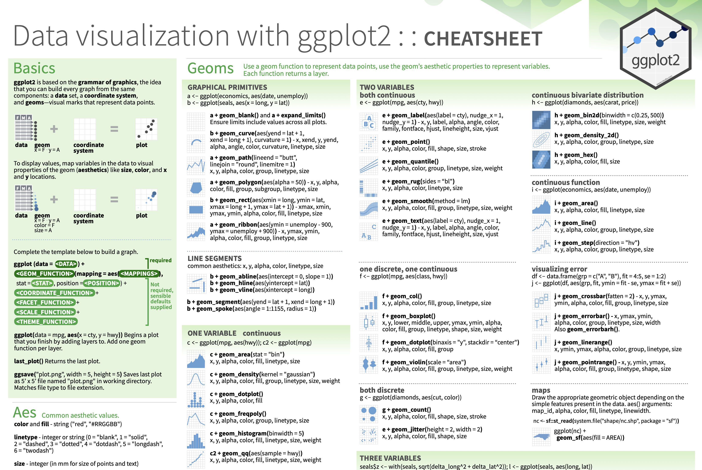

ggplot(
data = <DATA>,
mapping = aes(<MAPPINGS>)
) +
<GEOM FUNCTION>() +
any other arguments...Research-Based Practices for Integrating Pair Programming in the Classroom
Overview
- Pair Programming
- Establishing Equitable Participation
- Broken Circles Activity
- Discussion
- Pair Programming Activity
- Discussion
- Classroom Integration
Ice-Breaker
Find someone with whom you have three things in common (that do not include Statistics/Academia).
Pair Programming History
- Originated in Computer Science (Beck 2000)
- Common in academia and industry
- Pair programming involves two students sitting side-by-side, working on one computer to collaboratively work through a programming problem (Beck, 2000).
Pair Programming
Programmers alternate who is the “driver” and “navigator” (Williams and Kessler, 2002)
- The Driver is responsible for designing, typing the code, and having control over the shared resource (e.g., computer, mouse, and keyboard)
- The Navigator is responsible for providing support to identify errors, offer ideas, or opportunities for improvement.
Pair Programming Challenges
Status: Group collaborations fall prey to issues of status—the distribution of power among peers (Cohen and Lotan, 1995)
Power & Authority: Who speaks and whose voice is are recognized are indicative of power and status (Chiu & Khoo, 2003; Esmonde, 2009; Mulryan, 1994).
Marginalized Identities: The oppression students with marginalized identities when collaborating with peers in the mathematics classroom (Leyva et al., 2021) impact the development of students’ mathematical identities (Langer-Osuna, 2011; 2016).
Training Students in Equitable Collaboration
Complex Instruction as a pedagogy focuses on practices that create structures, protocols, and norms that attend to the ways that status characteristics lead to unequal power and participation (Cohen et al., 1997).

Complex Instruction
Develop autonomy of and interdependence of small groups through the use of norms, roles and other structures of participation
Provide curricular activities that are open-ended, rich in multiple abilities, and support learning important math concepts and skills central to a big idea.
Attending to the status of individuals through instructor who manages status and holds individuals and small groups accountable for participation and understanding.
Activity 1: Broken Circles
Broken Circles Discussion
- What do you think this game was about? What was its purpose?
- What did your group did that made you cooperate more successfully?
- What did your group did that made cooperation harder?
- What are some behaviors that could be implemented in the future to make cooperation easier?
Establishing Norms
We can’t just say “you need to work together”, we need to say “you work together by…”
Not doing the task for another person
Not just giving an answer but an explanation
Providing concise sharing / description of what is being done and reasoning for why it’s being done
Equitable Participaiton Training Procedures
What behaviors encourage equitable participation?
Say your own ideas
Listen to others
Give everyone a chance to talk
Ask others for their ideas
Give reasons for your ideas and discuss any and every different idea
Evaluating Group Participation
How do we know our group is engaging in equitable participation?
Is everyone talking?
Are you listening to each other?
Are you asking questions?
What could you ask to find out someone’s ideas?
Are you giving reasons for your ideas?
How do you ask for reasons from others?
Pair Programming Protocols
Roles in Pair Programming
Coder: Proposes Solution Strategies
- Reads out instructions or prompts
- Directs the Developer what to type in the Quarto document in RStudio
- Talks with Developer about ideas related to ways they could solve the problem.
- Manages resources (e.g., cheatsheets, textbook) for aiding in solution strategy.
Developer: Evaluates Solution Strategies
- Asks the instructor group questions.
- Types the code specified by the Coder into the Quarto document.
- Listens carefully, asks the Coder to repeat statements if needed, or to slow down.
- Encourages the Coder to vocalize their thinking.
- Asks the Coder clarifying questions.
- Runs the code provided by the Coder.
Notice the difference between the original “Driver” and “Navigator”.
Activity 2: Find the Penguins
ggplot2 Review
Complete this template to build a basic graphic:
. . .
Notice, every + adds another layer to our graphic.
. . .
Peer Activity: Using Data Visualization to Find the Penguins

Using Data Visualization to Find the Penguins
This puzzle activity will require knowledge of:
- installing and loading packages in R
- formatting code chunks in Quarto
- interpreting the context of a dataset
- data types / variable types
- different types of visualizations
- what visualization(s) go with different data types
- how to make visualizations with ggplot2
- choosing between different aesthetic options
None of us have all these abilities. Each of us has some of these abilities.
Pair Programming Expectations
During your collaboration, you and your partner will alternate between two roles:
. . .
Developer
- Reads prompt and ensures Coder understands what is being asked.
- Types the code specified by the Coder into the Quarto document.
- Runs the code provided by the Coder.
- Works with Coder to debug the code.
- Evaluates the output.
- Works with Coder to write code comments.
Coder
- Reads out instructions or prompts
- Directs the Developer what to type.
- Talks with Developer about their ideas.
- Manages resources (e.g., cheatsheets, textbook).
- Works with Developer to debug the code.
- Works with Developer to write code comments.
Group Norms
- Think and work together. Do not divide the work.
- You are smarter together.
- Be open minded.
- No cross-talk with other groups.
- Communicate with each other!
ggplot2 Resources
Every group should have a ggplot2 cheatsheet!
On the Front
- Column 1: the “template” for making a ggplot
- Column 3: creating plots for two continuous variables
- Column 4: creating plots for one discrete or one continuous variable
On the Back
- Column 4: adding facets and labels to your plot
- Column 3: adding themes to your plot (if you have extra time)

Discussion
- Was it easy or hard to stay “in your role”?
- How did the roles contribute to equitable participation?
- What was the instructor role during this activity?
Classroom Integration
Think about your classes…
- How does fit within your current classes/teaching?
- How do you think this would help your students learn programming?
- What challenges do you foresee?
- What opportunities does this provide?